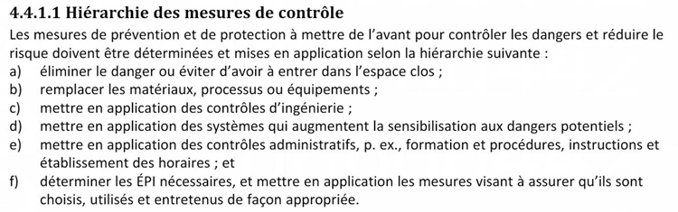
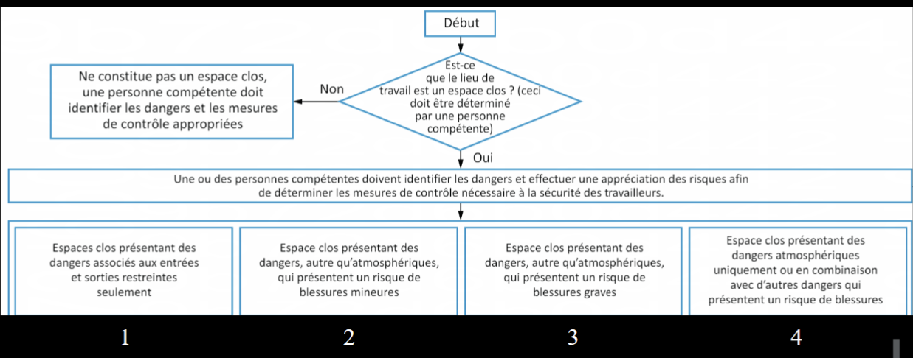
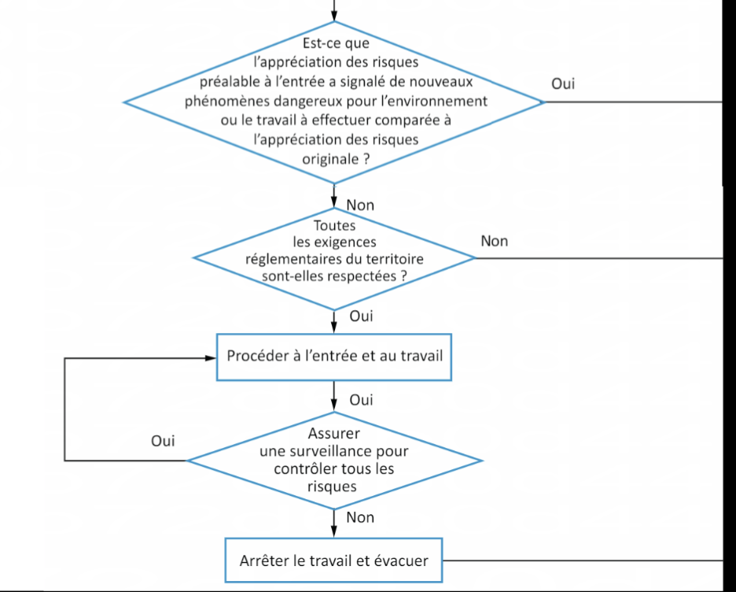

Gestion des risques en entreprise
La gestion des risques s'appuie sur des indicateurs (avancés ou tardifs), sur l'analyse de la sécurité des tâches (AST) et sur un ensemble de programmes coordonnés : prévention, cadenassage, Espaces clos, sécurité électrique, protection respiratoire, travail à chaud. En mine, ces programmes doivent dialoguer avec le programmes de prévention spécifique au RSSM et la coordination des sous-traitants.
Table des matières
- Indicateurs, tardifs vs avancés
- Analyse de la sécurité des tâches (AST)
- La notion de programme
- Programme de cadenassage et contrôle des énergies
- Programme de gestion des espaces clos
- Application terrain
- Ressources
Indicateurs, tardifs vs avancés
Pour s'améliorer, il faut mesurer. Référence : norme ANSI/ASSP Z16.1-2022.
| Indicateurs tardifs (lésions) | Indicateurs avancés (prévention) |
|---|---|
| Taux de fréquence, taux de gravité | Formations SST réalisées |
| Nombre d'accidents, perte de temps | Phénomènes dangereux supprimés ou substitués |
| Coûts de compensation CNESST, rôles et pouvoirs | Enquêtes d'incidents proactives |
| Vue du passé, réactionnels | Audits de sécurité |
Les indicateurs tardifs sont une mauvaise mesure de la prévention : un faible taux de blessures peut masquer la présence de phénomènes dangereux non traités. Les indicateurs avancés sont proactifs, prédictifs, mesurent le positif et permettent un retour fréquent.
Analyse de la sécurité des tâches (AST)
Technique structurée et préventive centrée sur la tâche (et non sur la personne). Référence : CCHST.
Huit étapes
- Choix des tâches à analyser (historique, niveau de risque, modifications, nouveauté).
- Méthode de recueil (observation, discussion, ou mixte).
- Décomposition en environ 10 étapes chronologiques (15 max).
- Identification des risques par étape (voir Appréciation du risque, méthodes).
- Choix des moyens de réduction (voir Hiérarchie des moyens de prévention).
- Validation : ne crée pas de nouveau risque, plus haut possible dans la hiérarchie, tâche toujours réalisable.
- Formation des travailleurs.
- Suivi, mise à jour, évaluation.
Feuille de travail type (3 colonnes)
| Étape | Incident ou danger possible | Mesure préventive |
|---|---|---|
| 1. Stationner | Près de la chaussée, terrain instable | Clignotants, terrain ferme, cales |
| 2. Sortir la roue | Poids excessif | Près du corps, jambes, rouler |
Bannir les formulations vagues comme « faites attention ». La mesure doit être observable.
La notion de programme
Au Québec, le programme de prévention (LSST art. 59) est l'outil principal de l'employeur. Élaboré avec la participation des travailleurs, il n'existe pas de modèle « standard » : il faut l'adapter à l'établissement.
Contenu incontournable : informations générales, portée, rôles, audit, formation, communication, circulation interne, plan d'évacuation, évaluation des risques, politique d'achat, déclaration et enquête d'accident.
Programmes spécifiques
- Procédure cadenassage en mine et contrôle des énergies (RSST art. 188)
- Sécurité électrique (CSA Z462)
- Espaces clos (RSST Section XXVI)
- Protection respiratoire (CSA Z94.4)
- Travail à chaud (NFPA 51B, CSA W117.2)
- Travail en hauteur, levage, chariots, EPI
Rôles à définir : haute direction, contremaître, travailleur, coordonnateur SST, CSS, représentant à la prévention, agent de liaison, représentant syndical.
Règle d'or : ne jamais copier-coller un programme sans l'adapter, sinon on gère de faux risques.
Programme de cadenassage et contrôle des énergies
Référence : norme CSA Z460-13, RSST art. 188.1 (remplacé) à 188.13, APSAM.
Contrôle des énergies = cadenassage + alternatives. Énergies à considérer : électrique (statique incluse), mécanique (cinétique, potentielle), hydraulique, pneumatique, chimique, thermique, radiation, combinées (vapeur), autres (vent, bruit).
Travaux visés (RSST art. 188.2) : montage, ajustement, inspection, réglage, décoinçage, déblocage, désassemblage, entretien, nettoyage, remise à neuf, modification.
15 éléments d'un programme : 1) informations générales, 2) portée, 3) rôles, 4) audit, 5) formation, 6) communication, 7) équipements (conception), 8) alternatives, 9) matériel, 10) principes d'utilisation, 11) procédure de contrôle, 12) contenu d'une procédure, 13) continuité, 14) absence de la personne autorisée, 15) coordination des sous-traitants.
Principes clés
- Un cadenas personnel avec cléage unique par personne autorisée (RSST art. 188.3, 188.11).
- Seule la personne qui pose son cadenas peut le retirer.
- Un moyen d'information seul ne constitue pas un cadenassage.
- Moraillon obligatoire quand plusieurs personnes interviennent.
- Le cadenassage est la méthode à privilégier ; une alternative exige une Appréciation du risque, méthodes démontrant une sécurité équivalente (RSST art. 188.4 (remplacé)).
Séquence générique : 1) arrêt complet, 2) élimination de l'énergie résiduelle, 3) cadenassage des dispositifs d'isolement, 4) vérification par essai de démarrage.
Procédure de retrait en absence (RSST art. 188.12) : tentatives de communication documentées, présence d'un témoin, inspection, rapport écrit conservé un an.
Attention à l'environnement immédiat : exemple de la scierie où un travailleur a été coincé en passant d'un démêleur cadenassé à un démêleur voisin non cadenassé.
Programme de gestion des espaces clos
Référence : CSA Z1006, RSST Section XXVI (modifié en 2023), APSAM.
Définition (RSST art. 1, depuis 25 juillet 2023) : espace totalement ou partiellement fermé (réservoir, silo, cuve, fosse, égout, citerne, pale d'éolienne) présentant au moins un de ces risques en raison du confinement
- Asphyxie, intoxication, perte de conscience, incendie/explosion (atmosphère ou température).
- Ensevelissement.
- Noyade ou entraînement par un liquide.
Vue d'ensemble du programme CSA Z1006.
{kind=link}

Toucher l'image pour l'agrandir14 éléments du programme : 1) informations générales, 2) portée, 3) rôles, 4) audit, 5) formation, 6) communication, 7) conception, 8) matériel d'entrée, 9) identification des phénomènes dangereux, 10) procédure de travail, 11) protocole d'autorisation, 12) plan d'urgence, 13) système d'intervention d'urgence, 14) coordination des sous-traitants.
Phénomènes dangereux (RSST art. 300) : atmosphère (O₂, contaminants, vapeurs, contraintes thermiques, ventilation), ensevelissement (sable, grain, sciure), autres (énergies, sources d'inflammation, configuration, communications).
Processus d'identification.
{kind=link}

Toucher l'image pour l'agrandirCatégories de risque CSA Z1006 art. 6.1
- Entrées-sorties restreintes seulement.
- Risques autres qu'atmosphériques, dommages légers.
- Risques autres qu'atmosphériques, dommages importants.
- Risques atmosphériques, seuls ou combinés.
Rôles (CSA Z1006 section 5) : direction, équipe d'entrée (personne qualifiée, habilitée, surveillant), équipe d'intervention d'urgence, sauveteurs, sous-traitants.
Hiérarchie d'intervention : éliminer (ne pas construire l'espace clos), éviter d'entrer (travail à distance), réduire les risques à l'intérieur.
{kind=link}

Toucher l'image pour l'agrandirVoir aussi la page Espaces clos (Hygiène) pour les contaminants spécifiques et les techniques de purge.
Application terrain
Programmes typiques en mine
| Programme | Spécificité minière |
|---|---|
| Procédure cadenassage en mine | Coordination concentrateur / souterrain / sous-traitants, énergies stockées (gravité, accumulateurs hydrauliques massifs) |
| Espaces clos | Silos à minerai, conduits de ventilation, chantiers borgnes, cuves de procédé |
| Sauvetage minier | Équipe formée, exercices, équipement BG4, coordination CNESST, rôles et pouvoirs |
| Tir et sautage | Permis, zones d'exclusion, vérification du tir, retour postérieur |
| Plan de circulation et radio | Cohabitation équipement lourd / piétons / convoyeurs |
| Travail en hauteur (chevalements, silos) | Lignes de vie, accès à long terme |
Leviers spécifiques au secteur minier
- Lier le programme de cadenassage à la gestion de quart : la relève au changement de quart est un moment critique où un cadenas peut « se perdre ».
- Documenter les alternatives au cadenassage (mode apprentissage robotique, transfert de clé) avec appréciation du risque versionnée.
- Prévoir un programme dédié à la coactivité avec les sous-traitants (shut-downs annuels, projets capitaux).
- Intégrer les indicateurs avancés au tableau de bord du gérant de site (audits faits, AST mises à jour, cadenas en circulation).
Souterrain vs surface : en souterrain, le contrôle des énergies inclut les énergies géotechniques (terrain, contraintes), qui ne sont pas cadenassables au sens strict mais doivent être traitées via le plan de soutènement et d'écaillage.
Ressources
| Document | Type | Source |
|---|---|---|
| Norme CSA Z460-13 (cadenassage) | Norme | CSA |
| Norme CSA Z1006 (espaces clos) | Norme | CSA |
| art-188.1-RSST, disposition remplacée à 188.13 | Règlement | LégisQuébec |
| RSST Section XXVI | Règlement | LégisQuébec |
| Guides APSAM (cadenassage, espaces clos) | Guides | APSAM |
| Norme ANSI/ASSP Z16.1-2022 (indicateurs) | Norme | ANSI/ASSP |
| Gabarit AST 3 colonnes | Gabarit | À développer en interne |
Articles wiki connexes
Pages qui pointent ici (21)
- 🎯 Démarrage rapide, conseiller SST Sécurité industrielle
- 🏠 Wiki Sécurité industrielle, mines Sécurité industrielle
- Accidents et incidents, théorie causale Sécurité industrielle
- Analyse des accidents Sécurité industrielle
- Appréciation du risque, méthodes Sécurité industrielle
- art-1-RSST Sécurité industrielle
- art-188-RSST Sécurité industrielle
- art-188.1-RSST Sécurité industrielle
- art-188.12-RSST Sécurité industrielle
- art-188.2-RSST Sécurité industrielle
- art-188.3-RSST Sécurité industrielle
- art-188.4-RSST Sécurité industrielle
- art-300-RSST Sécurité industrielle
- Articles internes Sécurité industrielle
- Hiérarchie de la prévention Sécurité industrielle
- Hiérarchie des moyens de prévention Hygiène industrielle
- Hiérarchie des moyens de prévention Sécurité industrielle
- Indicateurs avancés et tardifs en SST Sécurité industrielle
- Mettre en place une démarche d'appréciation des risques Sécurité industrielle
- Programme de gestion des risques machines Sécurité industrielle
- Risques sectoriels et bonnes pratiques Sécurité industrielle